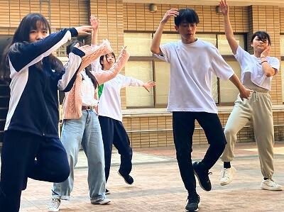
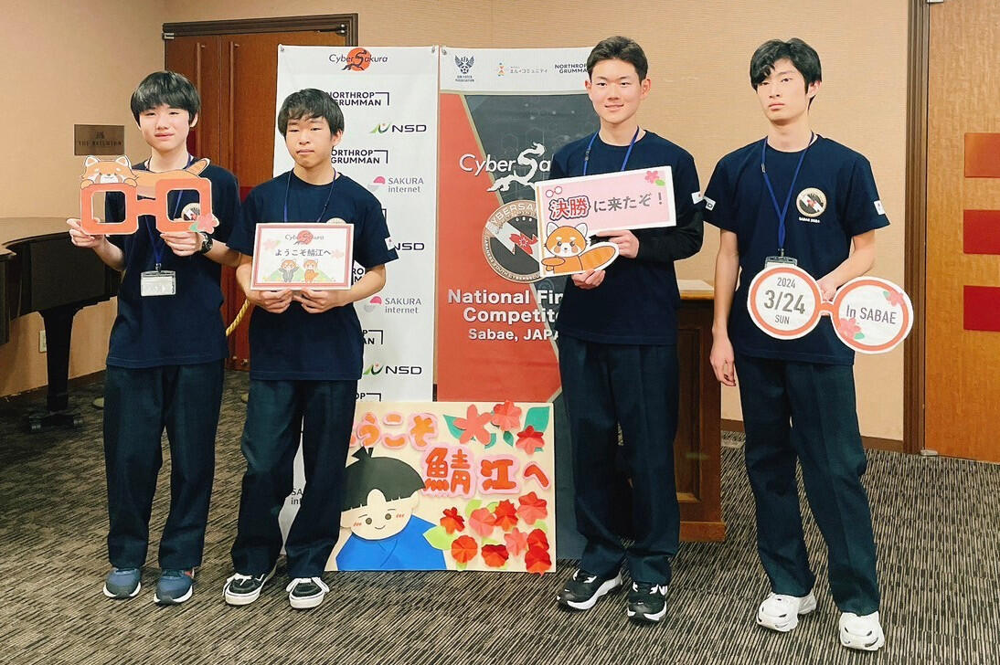
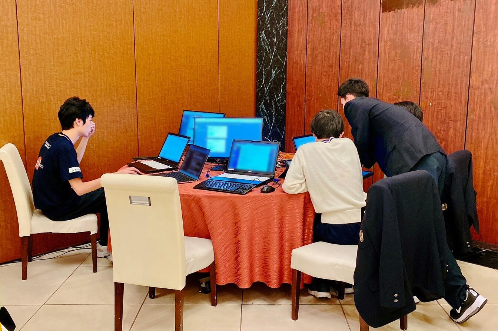
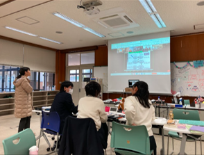
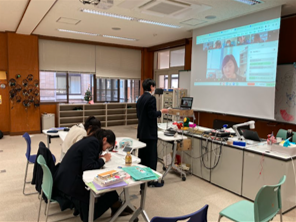
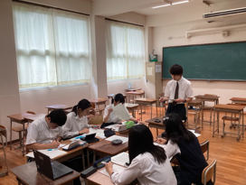
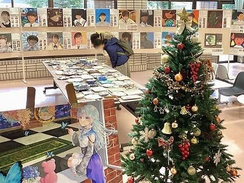
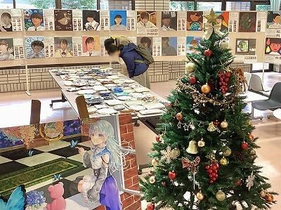

SAGANO BLOG
- >
- SAGANO BLOG
- >
- 部活動
2024年05月09日
４月29日にSSH事業の取組として，地理・地学 丹後巡検を実施しました。
目的は，丹後方面各地を巡検し，サイエンスフィールドワークを通して，地理学および地球科学に関する知見を深め，今後の学習の動機づけや将来の進路選択の参考とすることです。
サイエンス部，校有林調査ラボ，地理・地図ラボに所属する生徒が，それぞれの目的をもって参加しました。
天橋立，丹後海と星の見える丘公園，伊根，屏風岩，琴引浜，郷村断層を巡りながら，各地点と移動途中のバスの車窓からの風景について，教員がレクチャーを行いました。
最後に，個々に学んだことや気づいたこと，疑問に感じてさらに深めたいことをレポートにまとめました。レポートのテーマには次のようなものがありました。
・天橋立における侵食対策の現状と課題
・天橋立の松並木の植生とその保全
・自然の浄化作用や人間が及ぼす自然への影響
・京都丹後の屏風岩の形成について
・河岸段丘の土地利用 他
後日，事後学習として，巡検で学んだことをクラスで発表しました。学んだ知識をアウトプットすると同時に，質疑応答を通して知的な探究心の輪を広げていく様子も見られました。
教科書に閉じない，知識が分野を超えてつながる学びの体験となりました。
2024年04月17日
４月１０日（水）～１２日（金）に、生徒会主催の「部活動相談会」を行いました。
たくさんの部活動がブースを設ける中、１年生は興味のあるブースを訪れて活動内容の説明を受けたり、疑問や不安について相談したりしていました。
先輩たちの温かさと、新たな仲間と散策する楽しさに満ちた、盛況の３日間となりました。
１年生たちは、１６日（火）の部活動登録後に、嵯峨野高校での部活動をスタートしました。まだ入部を検討している人も、気軽に部活動の様子を見に行ってください。先輩たちは、温かく皆さんを迎え入れてくれますよ。

2024年04月01日

嵯峨野高校のしだれ桜は少しピンク色が濃く、艶やかな色です。デザイン工芸部では、この桜の美しさに負けぬ「ゆかた」作るべく、いまだ無地の反物と部長が格闘しております。

春休み中には、なんとか下図を反物に写すところまで進むつもりです。･･･が、その柄の場所が難しいのです。御協力いただいている「和衣庵」さまにお尋ねすると、着物には華やかな柄を入れる、おおよその場所が決まっているそうです。
着衣した状態で、右肩から胸・左袖の外面と左肩から背中・右袖の内面が大事だそうで、振り袖や格式のある着物はだいたいこの型になっているとのこと。ここに柄があると、日本文化の所作をするとき、美しく見えるそうです。「三味線を弾くポーズをして見える場所」と覚えるとよいとのこと。
･･･たしかに、日本美人の代表「見返り美人図」は左肩から背中を手前に見せて振り返っていますね。さすが菱川師宣先生。
色々と教えていただき、楽しく日本文化を学びながらゆかたの制作に励む部長なのでした。
2024年04月01日
いよいよ桜が咲きました！！
春の陽射しを待ちわびていたのは、生徒の皆さんも同じようです。
嵯峨野高校では、テニス部の日焼けの度合いでも季節の移ろいがわかります。
普段は優しくおっとりとした生徒の顔が、部活ではキリッと変わります。
この集中力、頼もしい限りです。

格技場では卓球部と剣道部が活動していました。
張り詰めた緊張感。どちらも一瞬を競う競技ですね。

中庭では桜の開花に急かされるように、ダンス同好会が熱心に活動しています。

大会でもあるのかな？話を聞いてみると...
「新入生歓迎会のために練習しています」とのこと。
どうやら生徒のみなさんは、桜ではなく新入生を待っているようす。
新学期に向けて、先輩としての準備があるのですね。
4月1日、生徒の成長とともに、春の陽射しが眩しく見える本年度の始まりでした。
2024年03月31日
軽音楽部２年生のバンド「ハロー二世帯住宅」が、３月20日に実施された第３回Kyoto Spring Contestにおいて「審査員特別賞」をいただき、京都府代表として８月に和歌山で行われる近畿高等学校軽音楽フェスティバルに出場することになりました。
また、３月28日に実施された第７回高等学校軽音楽コンテスト近畿北陸大会では、近畿・北陸の強豪校が集まる中、宇治市長賞を受賞しました。
賞をいただくことも嬉しいことですが、最近ファンが増えていて他校の先生や生徒からも声をかけられることがオリジナル曲を作っている彼らにとって何より励みになっています。
ハロー二世帯住宅の曲はYouTubeで視聴できます。ぜひご覧ください。
2024年03月29日
３月24日に鯖江市で行われた第３回CyberSakura決勝ラウンドにおいて、嵯峨野高校コンピュータ部から参加したチーム「HEXAGON」が見事優勝しました。
CyberSakuraは2021年に始まったサイバーセキュリティ分野の人材育成を目的とした教育プログラムで、鯖江市・総務省・デジタル庁・警察庁・福井県警察・防衛省の後援を受けています。参加できるのは日本国内の中学生・高校生・高専生（１〜３年）で、３～４人のチームを作って参加します。競技内容は、仮想のコンピューター上で脆弱な設定や状況を改善することで獲得できるスコアをチーム対抗で競うというものです。

会場に到着しました
会場に到着しました

競技中の様子
競技中の様子
決勝ラウンドではWindows Serverの課題が追加された上に、Windows・Ubuntuの難易度が予選ラウンドよりも更に高くなっていました。
応援ありがとうございました！
2024年03月06日
嵯峨野高校には伝統文化を学べる施設があります。粘土の成形から焼成まで全て学内で体験できる陶芸室では、今年度、茶道部がお点前で使う茶碗を作成しました。
そして、藍染やさまざまな染め物体験ができる染色室では、これからデザイン工芸部がゆかた制作に挑みます。
先日、地元京都の企業「和衣庵」さまのご協力を得て、柄合わせの位置の手掛かりとなる「墨打ち」や和裁の裁断方法など、ゆかた制作の一連の流れを教えていただきました。


とても親身になって相談にのってくださり、生徒が考えた図案をもとに完成まで引き続きご協力・ご指導いただきます。
嵯峨野高生がゼロから挑む、はじめてのゆかた作り。今はまだ、おっかなびっくり状態です...どうなることやら。
（言われるがままに採寸されている部長）↓

今後、時折り制作過程を更新いたします。
どうぞみなさま温かい目で応援よろしくお願いいたします。
2024年03月05日
京都府立高等学校PTA連合会主催の「バイク4ない運動プラス1」啓発ポスターコンクールにおいて、美術部1年生が最優秀賞を受賞いたしました。
本作品は市内の京都府立高校に掲示されます。
ご本人より一言
「まさか自分が選ばれるとは思っていなかったので、驚きと光栄の念でいっぱいです」
生徒の皆さんは可能性の塊です！！
これからも嵯峨野高校はみなさんの「挑戦」を応援します。
おめでとうございます。
2024年02月19日
２月12日、本校ESS部の部員14名が、福知山市で開催された令和５年度 京都府パーラメンタリーディベート（即興型英語ディベート）交流大会に参加しました。
開会の挨拶の後、高校生英語ディベート全国大会でジャッジも務められている川田元氏によるキーノートレクチャーを聞きました。その後、即興型ディベートのルール説明があったのち、練習一回、本番一回の計二試合の交流戦をしました。練習は「高校生にとっては部活より勉強の方が大事である」、本番は「ペットを飼うことは利益よりも害をもたらす」という論題でした。普段と違うジャッジの先生からのフィードバックも、とても良い刺激になったようでした。

嵯峨野高校ESS部、今後も英語ディベートに楽しみながら取り組んで参ります！
2024年01月22日

シンギュラリティバトルクエスト2023 サイバークエストの決勝戦が１月20日・21日に開催されました。嵯峨野高校コンピュータ部の1年生が、合計9時間にわたる戦いの結果、見事１位を獲得しました。
シンギュラリティバトルクエストとはAI/ICTのスキルを競う大会で、AIクエスト、サイバークエスト、データクエスト、ロボクエスト、Xクエストの５つの競技があります。サイバークエストは、情報セキュリティに関するクイズ形式の問題を、セキュリティの知識やソフトを駆使して、隠された言葉(Flag)を見つけるCTF形式の競技です。
サイバークエスト決勝戦は、各ブロック代表６チーム、選抜枠11チーム、リベンジャーズ３チームの合計20チームが競い合いました。RSA暗号や量子暗号に関する難問も出題される大変難易度の高い大会でした。応援ありがとうございました！
2023年12月26日
12月23日、24日の２日間に渡って開催された第９回PDA高校生即興型英語ディベート全国大会2023（主催：一般社団法人パーラメンタリーディベート人財育成協会）に、本校ESS部の代表として２年生３名がオンラインで参加しました。今年は日本全国から76校が出場し、本校は８年連続出場しています。

今回の大会では「政治とビジネスどちらが日本を変えられるか」「日本の大学を無償化すべきか」「おしゃれは害よりも利益をもたらすか」「米国はイスラエルへの支援を停止すべきか」といった、身近なものから最新の時事問題まで、多様な内容が論題となりました。

本校ESS部は予選ラウンド４戦中２勝し、76校中35位という結果となりました。また、学校として授業導入賞を受賞しました。論題に関する専門家（キーノートスピーカー）によるレクチャーや、強豪校による決勝トーナメント戦の見学を通じて、多くのことを学ぶと共に、次回の公式戦に向けたモチベーションを高めることが出来ました。
二週連続の全国大会でしたが、精一杯戦い抜きました。来年も楽しみながら、更なる飛躍を目指して英語ディベートに取り組んで行きます。
2023年12月25日
12月16日、17日の２日間、栃木県の作新学院大学にて開催された全国高校生英語ディベート大会（主催：一般社団法人 全国高校英語ディベート連盟 （HEnDA））に、本校ESS部の２年生５名が京都府代表として出場しました。


今回の大会は準備型ディベートのため、「日本政府は、代理出産を合法化すべきである。是か非か。」という今年度の論題に対して、賛成と反対両方の立場から、およそ10ヶ月の間取り組んできました。専門家でも意見の分かれる難題ですが、国内外の論文や記事など様々なデータを収集し、何度も議論を重ねてきました。


準備型ディベートでは本校として初めての全国大会出場でしたが、全国から予選を勝ち抜いてきた強豪校を相手に、６戦中３勝と健闘しました。学ぶことも多く、大変有意義な大会となりました。
2023年12月25日
全国高校駅伝の開閉会式の司会は、京都府高等学校総合文化祭放送部門アナウンス小部門の上位４名が担当することとなっており、４位に入賞した本校放送部員がもう１名の生徒とともに開会式の司会を担当しました。
12月23日に全国からの出場校が集い京都市体育館(かたおかアリーナ京都)で行われた開会式において、出場校名の紹介や来賓の紹介などの大役を無事に果たすことができました。全国高校駅伝開閉会式の司会を本校放送部員が担当するのは２年連続８回目となります。来年度の大会でも司会が担当できるよう頑張ります！！
2023年12月20日


華道部は、全国高校生伝統文化フェスティバルの「迎え花」の製作を行いました。
このフェスティバルは、日本の伝統文化に勤しむ全国の高校生が一堂に会する文化フェスティバルです。
全国からの高校生や観客の皆さんをお出迎えするために、お花で会場を飾りました。
部員みんなで一つの作品を作るのは初めてのことでしたが、納得できる作品ができました。
嵯峨野高校は、玄関を入った正面が担当場所でした。
作品テーマは、「Noël」。
作品の説明です。
「ようこそ、京都へ。皆さんをお迎えするにあたり、今日という『ハレの日』にふさわしい華やかな作品としました。『Noël』というテーマで、クリスマスをイメージしています。皆さんのものにサンタが訪れるようなイメージで制作しました。」
このブログをご覧の皆さんのところにも、サンタが訪れますように。
メリークリスマス！


 
{kind=link}
{kind=link}
{kind=link}
{kind=link}
{kind=link}
{kind=link}
{kind=link}
{kind=link}
{kind=link}
{kind=link}
{kind=link}
{kind=link}
{kind=link}
{kind=link}
{kind=link}
{kind=link}
{kind=link}
{kind=link}
{kind=link}
{kind=link}
{kind=link}
{kind=link}
{kind=link}
{kind=link}
{kind=link}
{kind=link}
{kind=link}
{kind=link}
{kind=link}
{kind=link}
{kind=link}
{kind=link}
{kind=link}
{kind=link}
{kind=link}
{kind=link}
{kind=link}
{kind=link}
{kind=link}
{kind=link}
{kind=link}
{kind=link}
{kind=link}
{kind=link}
{kind=link}
{kind=link}
{kind=link}
{kind=link}
{kind=link}
2023年12月20日
12月16日(土)、狂言部の定期公演「嵯峨野高校狂言の会」を開催しました。狂言の取組を始めてから15年目、冬青庵能舞台(京都市中京区)で会場をお世話いただくようになってから10回目の節目になります。
現在、1・2年生の部員が3人しかいないのですが、3人で演じる曲目を2つ上演すると決めて、文化祭が終わってから3か月で仕上げるというハイペースで頑張りました。これも、茂山千五郎先生はじめ茂山狂言会の先生方が懇切に御指導くださった賜物です。あらためて心から感謝を申し上げます。
(1)「蟹山伏(かにやまぶし)」
山伏と強力の主従が、近江蟹ヶ沢で異形の者に出会います。さては蟹の精と察して、今晩のおかずにしてやろうと打ちかかるのですが......。
{kind=link}
蟹の精は、賢徳(けんとく)の面(おもて)をつけていて視野が非常に狭いのですが、舞台を軽やかに動き回り、山伏や強力の動きともぴたりと合って、蟹の精が2人を翻弄する面白さをみごとに表現していました。
(2)「附子(ぶす)」
主人の留守中、太郎冠者と次郎冠者は、猛毒だという附子が実は砂糖だと気がついて、2人で全部たいらげてしまいます......。

1曲目を終えたら、先生方が手際よく装束を着替えさせてくださり、すぐに2曲目です。 せりふのニュアンスや動きの緩急が本番ではいっそう濃厚になり、夢中になって砂糖を食べつくす様子や、猛毒だと嘘をついた主人が仕返しにあう可笑しさに、客席が大いに沸きました。練習で苦心した舞も、きれいに決まりました。
休憩をはさんで、茂山千五郎先生と網谷正美先生に「伯母ヶ酒(おばがさけ)」を演じていただきました。酔っ払って、だんだんろれつが回らなくなっていったり、ふらふらの千鳥足で伯母から逃げていく様子を千五郎先生がみごとに演じられ、伝統の芸の素晴らしさを堪能させていただきました。
翌17日(日)には、京都コンサートホールで開催された「令和5年度全国高校生伝統文化フェスティバル」のオープニングに出演させていただき、「蟹山伏」を演じました。大きなホールいっぱいに元気な声を響かせ、盛んな拍手をいただきました。
{kind=link}
冬青庵能舞台には狂言部の卒業生が何人も来てくれて、受付の仕事などを手伝ってくれました。こうした良い伝統が続いていくよう、これからも励みたいと思います。
2023年12月19日
{kind=link}
CyberSakura予選ラウンドの結果が確定し、嵯峨野高校コンピュータ部から参加したチーム「HEXAGON」は予選ラウンド1位となり、決勝ラウンド出場権を獲得しました。
CyberSakuraは2021年に始まったサイバーセキュリティ分野の人材育成を目的とした教育プログラムです。日本国内の中学生・高校生・高専生（1〜3年）を対象に実際のサイバー攻撃を想定し、仮想のコンピューター上で脆弱な設定や状況を改善することで獲得できるスコアをチーム対抗で競います。
決勝ラウンドは、2024年３月24日に福井県鯖江市で開催され、予選ラウンド上位5チームが競技に参加します。
2023年12月18日
{kind=link}
{kind=link}
12月17日(日)に行われた第47回京都府公立高等学校卓球大会において、女子団体の部で第２位となりました。ここまで日々頑張ってきた練習の成果だと思います。卓球部は男女とも12月23日から和歌山で行われる近畿大会に出場しますので、引き続き応援をよろしくお願いします。近畿大会に向けてよい流れを呼び込む結果となりました。
2023年11月25日
2023年の嵯峨野高校ワンダーフォーゲル部の競技登山大会結果報告をします。競技登山は４人１チームで行われ、体力・歩行技術、読図、記録、幕営、天気図、炊事、登山知識などが100点満点からの減点法で採点・審査されます。大会を通してのチームワークが試される競技です。
今年のワンダーフォーゲル部は、大きな飛躍の年になりました。５月に行われた全国高等学校登山大会京都府予選で男子の部・女子の部ともに優勝し、８月に北海道の旭岳等で行われたインターハイに出場しました。 インターハイ本番は、北海道の雄大な自然を満喫しつつ、全国の代表校と競い合い、男子１６位、女子２１位という好成績を収めました。
３年生が引退し、新しい体制で臨んだ10月の京都府高等学校登山選手権大会（京都府北部大江山山系で開催）では、嵯峨野高校から５チームが出場しました。１日目は冷たい雨の中を歩きましたが、2日目は素晴らしい雲海を眺めながらの競技となりました。結果は、女子の部で、嵯峨野Ｙが優勝、嵯峨野Ｚが準優勝、男子の部で、嵯峨野Ａが準優勝、嵯峨野Ｃが第３位、嵯峨野Ｂが第４位でした。
大会にむけて活動する部員たちの様子は、テレビのニュース番組のスポーツコーナーでも紹介いただきました。今後はさらに体力や読図力をつけていきたいと思います。
Copyright (C) 京都府立嵯峨野高等学校 All Rights Reserved.